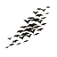

motif-sweep + motif-cloud · murmuration texture · register R3 figures
cam-spider-eye-front · pod shell + LED cluster · front view (Icons v2 geometry)
cam-pod-profile · teardrop pod + hood + pole (doctrine 7)